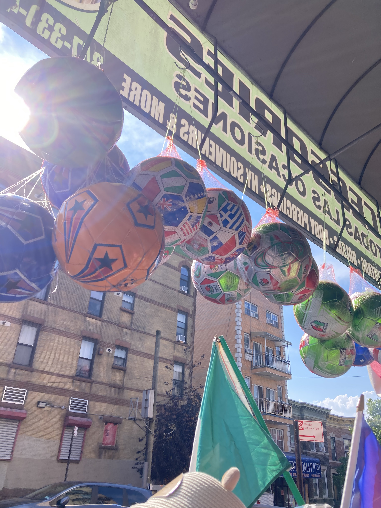

This is my home page
Alma Herrera-Pazmiño, Director & Producer (she/her/bruch) Alma is an editor and storyteller from the Mission District of San Francisco, CA now based in Queens, NY. Her background as in youth development through art for social justice is at the foundation of her ethics and artistic approach. She was trained as an assistant editor for Barbara Kopple’s Desert One (TIFF ‘19) and has since worked as feature documentary editor. She was selected as DOC NYC’s 40 under 40 (2023) and has been recognized for her work as an editor on Selena y Los Dinos (Sundance ‘25), All Up In The Biz (Tribeca ‘23) and Louis Armstrong’s Black and Blues (TIFF ‘22). In her directorial work her central question is: What are the rituals we create at the intersection of grief and joy? She deals with themes regarding belonging, culture and nature for queer people of color across the Americas. Her short fiction #LaGaybie (2023), about a queer coming of age story premiered at the Roxie in San Francisco through Cine+Mas Latino Film Festival and the Queer Women of Color Film Festival. She is currently expanding her craft as a director in a personal documentary “Reciprocity”.